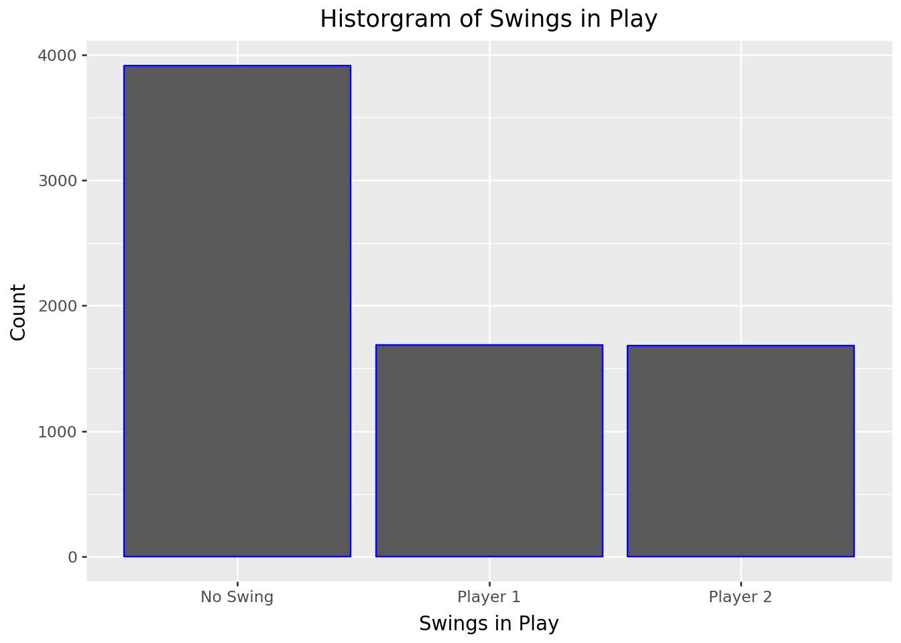
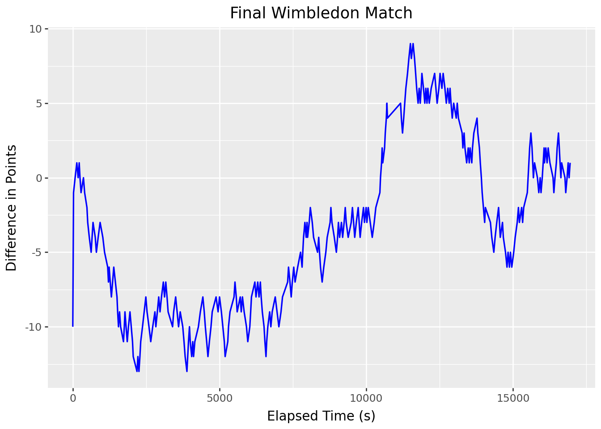
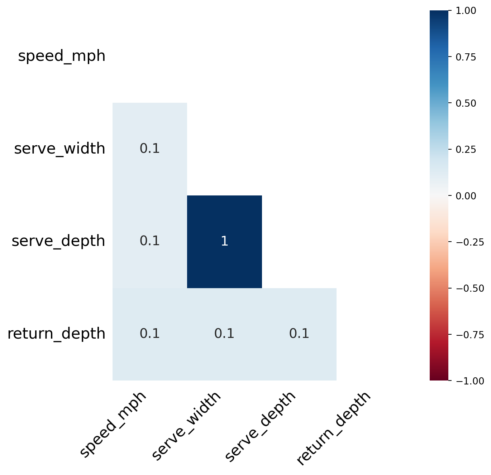
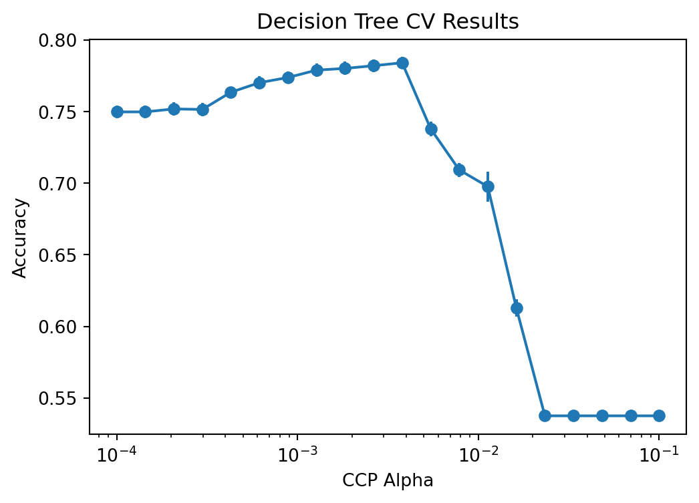
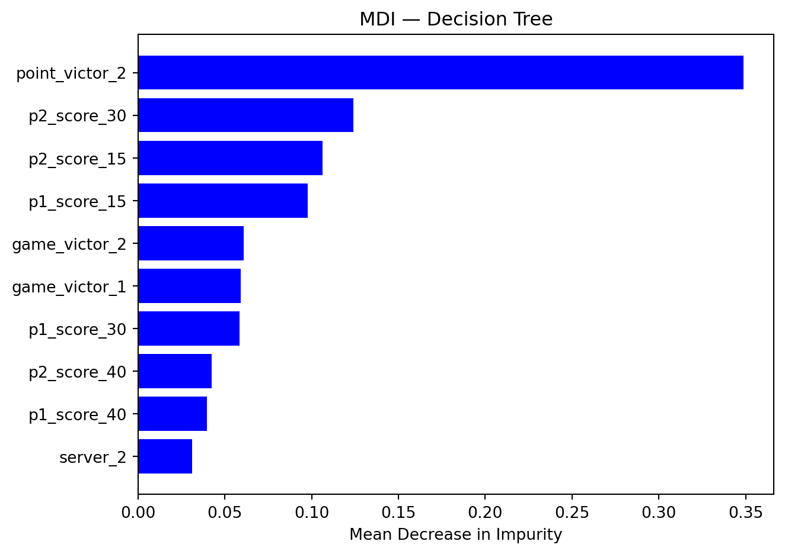
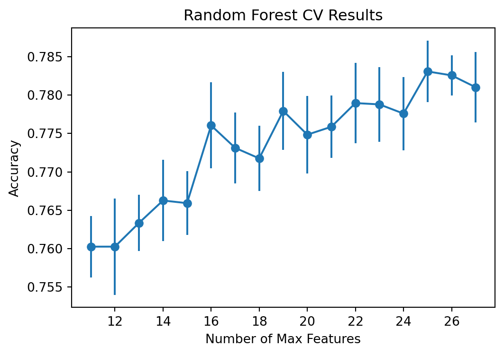
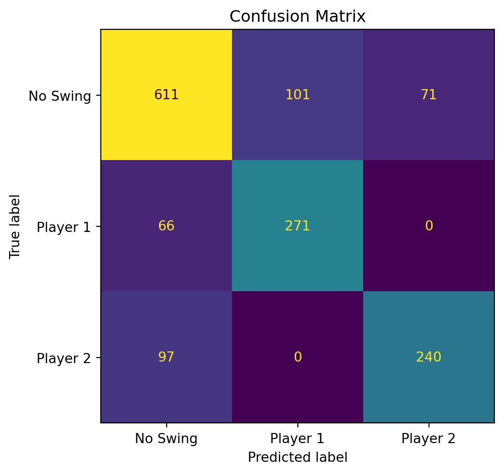
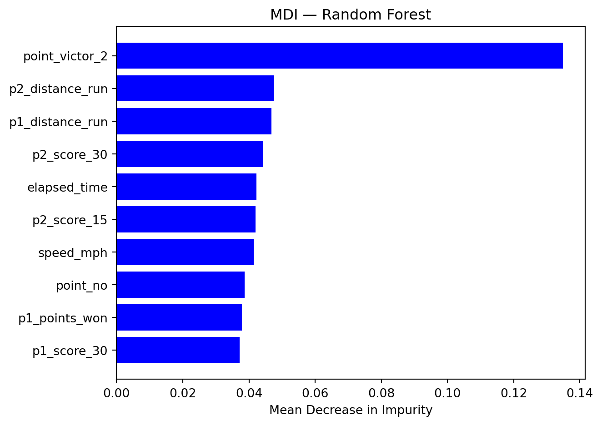
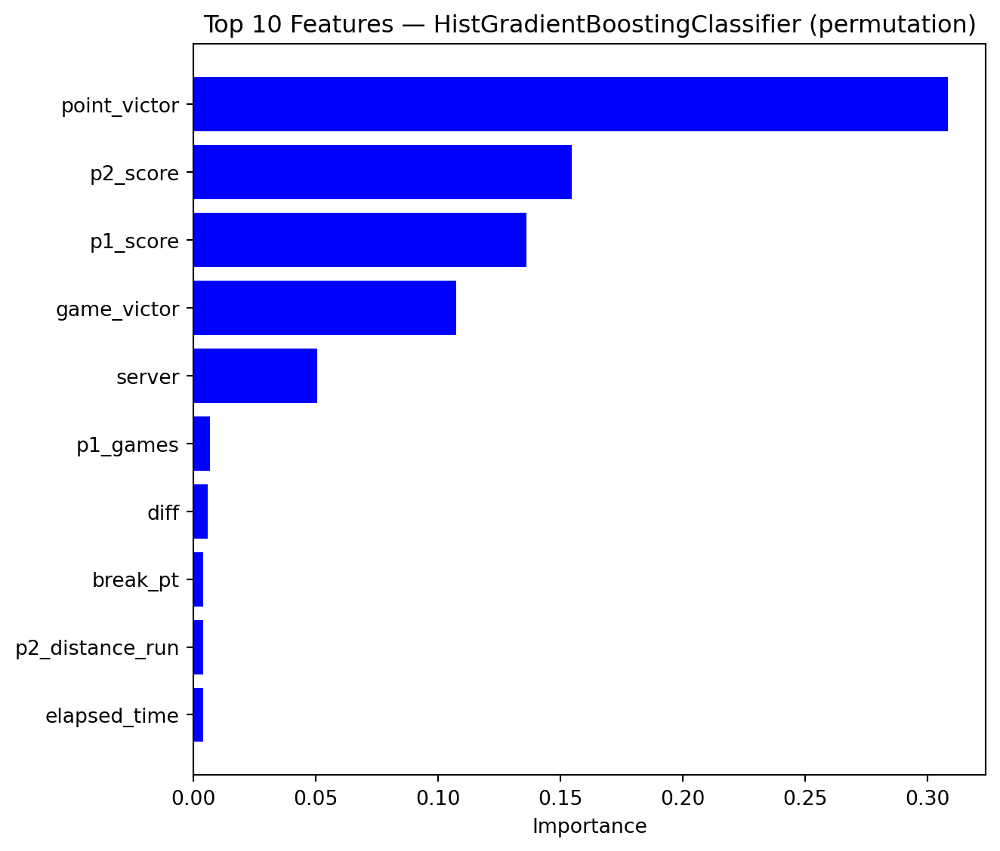

I conducted my sample analysis on a dataset provided by the 2024 COMAP Problem ‘Momentum in Tennis’. For a quick summary, the problem aims to understand if the momentum, defined as “strength or force gained by motion or by a series of events”, in a tennis match is quantifiable and to build a model to predict changes in momentum (also called swings in play). Click here for the link to the full problem, along with the provided dataset.
Before we dive into the sample analysis, here are some rules of tennis you should be aware of:
Point structure of tennis
To win a match, you need to win 5 sets
To win a set, you need to win at least 6 games
To win a game, you need to win at least 4 points
Within a game, points go by 0 (Love), 15, 30, and 40 (also possibly add-in and add-out)
Serving in tennis
Players alternate who is serving each game (e.g. P1 serves during game 1, P2 servers during game 2, P1 serves during game 3, etc.)
Players get two serves
If they miss both serves, it is called a double fault
Now that we have that situated, here are the four goals of the problem:
Develop a model that captures the flow of play as points occur
The model should identify which player is performing better at a given time in a match and how much better they are performing
Use your model/metric to assess if swings in play by one player are random
Develop a model that predicts these swings in the match
What factors seem most related (if any)?
Test the model on one or more matches
How well does it predict swings in the match?
If the model performs poorly, can you identify any factors that might need to be included in future models?
Packages & Data Setup
Python Packages
This project was programmed entirely in Python. The packages used consisted of pandas, numpy, matplotlib.pyplot, plotnine, missingno, re, joblib, and sklearn.
As stated above, this sample analysis uses data from each match during the 2023 Wimbledon. I used an edited version because there were some errors in the data that I fixed. Normally, I wouldn’t mess with the raw data.
After initially looking at the data, I noticed there were a handful of binary variables that had two columns, one for each player, that could be condensed into one column. Thus, I combined the columns for if the player hits an ace serve, hits a winner shot, has a double fault, made an unforced error, made it to the net during the point, had an opportunity to win a game the other player was serving (called a break point), if they won the break point, and if they missed the break point.
Despite fixing some errors in the data, there were some more errors in the elapsed time between points in the middle of one of the matches. I knew I could fix this error without editing the raw data. After I corrected any errors in the elapsed time, I converted the elapsed time into the total seconds that have passed at that given point since the beginning of the match.
Show code
# rows 584 to 634 have incorrect format for elapsed_time# Replace hour 24 with 0 and hour 25 with 1 in rows 584-634match.loc[584:634, 'elapsed_time'] = match.loc[584:634, 'elapsed_time'].str.replace(r'^24:', '0:', regex=True)match.loc[584:634, 'elapsed_time'] = match.loc[584:634, 'elapsed_time'].str.replace(r'^25:', '1:', regex=True)# changing elapsed_time into number of seconds instead of a stringelapsed_time = []for i inrange(rows): dt = datetime.strptime(match['elapsed_time'][i], '%H:%M:%S') delta = dt - datetime(1900, 1, 1) elapsed_time.append(delta.total_seconds())match['elapsed_time'] = elapsed_time
Now that I have merged some columns and fixed some data entry errors, I dropped redundant columns, renamed the columns I merged, and then categorized the columns into if they were a numerical variable or categorical variable. Then, I changed all the category variables into category dtypes.
The last thing I did for the data manipulation was to compute the difference in the accumulated points between the players at the end of each point, compute the derivative at each point in the game, then calculated swings in play as the critical points in the difference in accumulated points between the players.
Here is the distribution of the swings in play variable.
Show code
p = (ggplot(mat, aes(x='swings_in_play', y= after_stat('count'))) + geom_bar(color='blue') + labs(title="Historgram of Swings in Play", x='Swings in Play', y='Count'))p.show()

Here is a line plot of the final match of the 2023 Wimbledon. It showcases the difference in accumulated points between both players at a given point in the match. Since accumulated points does not easily translate to the set and game score for each player, it only roughly indicates which player is winning and by how much.
Show code
# grouping data to find out the different matches in the datasetmatch_grouped = mat.groupby('match_id')# create a dictionary of DataFrames, one per match_idmatch_sets = {match_id: group.copy() for match_id, group in match_grouped}# graph of final wimbledon matchp = (ggplot(match_sets['2023-wimbledon-1701'], aes(x='elapsed_time', y='diff')) + geom_line(color='blue', linetype='solid', size=0.7) + labs(title ='Final Wimbledon Match', x='Elapsed Time (s)', y='Difference in Points') )p.show()

Missing Values
I spent most of my data exporation looking into some of the missing values. There are missing values for the speed of the serve, the width of the serve, the depth of the serve, and the depth of the return. I particularly find this odd because each point involves one of the players serving at least once. But it is possible for the serve to not be recorded if it was a double fault. Similarly, it is possible the return depth was not recorded if the serve was an ace. So, I did a bit more digging. First, I created a heatmap of the missing variables.
Show code
mo.heatmap(mat, figsize= (7,7))

As you can see, there is a perfect correlation between serve depth and serve width. On the other hand, the speed of the serve and the depth of the return are not strongly correlated to the other variables with missing data.
I looked more into if missing values for serve speed, width, and depth are the result of double faults and didn’t come to any strong conclusions. It appears that at least most points, if not all, that occur due to a double fault have missing values for serve speed, width, and depth but not all missing values for these three variables occured when there was a double fault. A similar story occured for return depth and ace serves.
Data Splitting & Preprocessing
Before I start building and fitting models, I split the dataset into a train and test set. I startify the dataset based on swings in play.
Show code
# dropping match id and dx variablesmat_dr = mat.drop(columns= ['match_id', 'dx'])# going with a 80-20 splitmat_train, mat_test = train_test_split( mat_dr, train_size=0.8, stratify= mat_dr['swings_in_play'], random_state=4025)
Next, I created a dataset with all of the predictors and a dataset with just the outcome variable for both the training and test datasets. Then, I created a preproccesing pipeline to be used when model building. This pipeline works differently depending if the variable is numerical or categorical. For numerical variables, the pipeline simply imputed the median value for any missing values in the dataset. I choose the median value as the median value is not as sensitive to outliers as the mean is. For categorical variables, the pipeline imputes the most frequent category for missing values and then creates dummy variables for each category, except the first category of a variable.
Since this is a classification problem that is focused on predicting accuracy, I decided to build a random forest model and a boosting model. Before I do that, I created a decision tree model as a baseline for comparison.
Decision Tree Classifier
I built a decision tree classifier as a baseline model and evaluated its performance on the test set using cross validation and accuracy as the metric. The graph below shows its associated confusion matrix.
Show code
# decision tree pipelinetree_mod = Pipeline([ ('preproc', preproc), ('model', DecisionTreeClassifier(random_state=4025))])# stratified k fold with 10 splits with scoringskf = StratifiedKFold(n_splits=10, shuffle=True, random_state=4025)# cross validationtree_cv = cross_validate(tree_mod, X_train, y_train, cv= skf, scoring= {'acc': 'accuracy'})# graph of confusion matrixtree_mod.fit(X_train, y_train)y_preds = tree_mod.predict(X_test)fig, ax = plt.subplots(figsize=(6, 5))ConfusionMatrixDisplay.from_predictions( y_test, y_preds, ax=ax, colorbar=False)plt.title('Confusion Matrix')plt.tight_layout()plt.show()
Next, I tuned the cost complexity parameter, \(\alpha\), of the decision tree model using cross validation (CV). The plot belows shows the accuracy using CV for each value of alpha specified. Then using the one-standard error rule, I chose the largest \(\alpha\) value to create a more parsimonous model. The optimal value for \(\alpha\) is 0.00379.
Show code
# param dictionaryparam_grid = {'model__ccp_alpha': np.logspace(-4, -1, 20)}# defining grid searchtree_grid = GridSearchCV( tree_mod, param_grid= param_grid, scoring='accuracy', cv= skf)# fitting the model to training settree_grid.fit(X_train, y_train)tree_results = pd.DataFrame(tree_grid.cv_results_)# graphing acc against alpha valuesfig, ax = plt.subplots(figsize=(6, 4))ax.errorbar(tree_results['param_model__ccp_alpha'], tree_results['mean_test_score'], yerr=tree_results['std_test_score']/np.sqrt(10), marker='o')ax.set_xscale('log')ax.set_xlabel('CCP Alpha')ax.set_ylabel('Accuracy')ax.set_title('Decision Tree CV Results')plt.show()# obtaining good value for alpha using accuracy and one standard error rulebest_idx = tree_results['mean_test_score'].argmax()best_acc = tree_results.loc[best_idx, 'mean_test_score']best_se = tree_results.loc[best_idx, 'std_test_score'] / np.sqrt(10)threshold = best_acc - best_secandidates = tree_results[tree_results['mean_test_score'] >= threshold]optimal_alpha = candidates['param_model__ccp_alpha'].max() # larger alpha = more parsimonious model

Now, I created a new decision tree classifier with the optimal value for \(\alpha\). I evaluated it using stratified cross validation and got an accuracy of 0.784. The associated confusion matrix is shown below.
Lastly, here is a plot showing the top ten features indicated by the decision tree model.
Show code
# getting feature namesfeature_names = [ name.split('__', 1)[-1]for name in best_tree_mod.named_steps['preproc'].get_feature_names_out()]# getting mdi valuestree_mdi = best_tree_mod.named_steps['model'].feature_importances_# plotting mdi for each featuretree = (pd.DataFrame({'feature': feature_names, 'importance': tree_mdi}) .sort_values('importance', ascending=False).head(10))fig, ax = plt.subplots(figsize=(7, 5))ax.barh(tree['feature'][::-1], tree['importance'][::-1], color='blue')ax.set_xlabel('Mean Decrease in Impurity')ax.set_title('MDI — Decision Tree')plt.tight_layout()plt.show()

The model indicates that the most imporant predictors are if player 2 was the point victor and if player 1 or player 2 have a score of 15 or 30.
Random Forest
Now, decision trees are known to not be the most accurate models, trading flexibility for interpretability. Thus, I decided to try a random forest model to help improve accuracy in predicting swings in play.
Here I created a baseline random forest model and then tuned the number of max features to improve model accuracy. The optimal value for the number of max features is 25.
Show code
# defining location for cachememory = Memory(location='cache', verbose =0)# baseline random forest modelrf_mod = Pipeline([ ('preproc', preproc), ('model', RandomForestClassifier(random_state=4025))], memory= memory)# param dictionaryparam_grid = {'model__max_features': np.linspace(11, 27, 17, dtype= np.int16)}# defining grid searchrf_grid = GridSearchCV( rf_mod, param_grid= param_grid, scoring='accuracy', cv= skf, n_jobs=-1)# fitting the model to training setrf_grid.fit(X_train, y_train)rf_results = pd.DataFrame(rf_grid.cv_results_)# graphing acc against alpha valuesfig, ax = plt.subplots(figsize=(6, 4))ax.errorbar(rf_results['param_model__max_features'], rf_results['mean_test_score'], yerr=rf_results['std_test_score']/np.sqrt(10), marker='o')ax.set_xlabel('Number of Max Features')ax.set_ylabel('Accuracy')ax.set_title('Random Forest CV Results')plt.show()# obtaining good value for alpha using accuracy and one standard error rulebest_idx = rf_results['mean_test_score'].argmax()best_acc = rf_results.loc[best_idx, 'mean_test_score']best_se = rf_results.loc[best_idx, 'std_test_score'] / np.sqrt(10)threshold = best_acc - best_secandidates = rf_results[rf_results['mean_test_score'] >= threshold]optimal_max_features = candidates['param_model__max_features'].min() # less features = less correlated

Now, I created a new random forest classifer with the optimal number of max values. I evaluated it using stratified cross validation and got an accuracy of 0.783. The associated confusion matrix is shown below.
Show code
# pipeline with optimal number of max featuresbest_rf_mod = Pipeline([ ('preproc', preproc), ('model', RandomForestClassifier( max_features= optimal_max_features, random_state=4025))], memory= memory)# cross validationrf_cv = cross_validate(best_rf_mod, X_train, y_train, cv= skf, scoring= {'acc': 'accuracy'})# graph of confusion matrixbest_rf_mod.fit(X_train, y_train)y_preds = best_rf_mod.predict(X_test)fig, ax = plt.subplots(figsize=(6, 5))ConfusionMatrixDisplay.from_predictions( y_test, y_preds, ax=ax, colorbar=False)plt.title('Confusion Matrix')plt.tight_layout()plt.show()

Here is a plot showing the top ten features indicated by the random forest model.
Show code
# getting feature namesfeature_names = [ name.split('__', 1)[-1]for name in best_rf_mod.named_steps['preproc'].get_feature_names_out()]# getting mdi valuesrf_mdi = best_rf_mod.named_steps['model'].feature_importances_# plotting mdi for each featurerf = (pd.DataFrame({'feature': feature_names, 'importance': rf_mdi}) .sort_values('importance', ascending=False).head(10))fig, ax = plt.subplots(figsize=(7, 5))ax.barh(rf['feature'][::-1], rf['importance'][::-1], color='blue')ax.set_xlabel('Mean Decrease in Impurity')ax.set_title('MDI — Random Forest')plt.tight_layout()plt.show()

The random forest model indcates that the top predictors in swings in play are if player 2 was the point victor and the distance both players ran during the point.
Boosting
The random forest model did not perform better than the decision tree model, thus I created a boosting model, known to be more flexible than random forest models. I chose to employ a histogram-based gradient boosting model, which handles missing values natively. Thus, I created a new pipeline that doesn’t involve imputing missing values.
Show code
# new pipeline for boosting modelboost_preproc = ColumnTransformer([ ('cat', Pipeline([ ('one-hot', OneHotEncoder(drop='first', handle_unknown='ignore', sparse_output=False)) ]), cat_cols)], remainder='passthrough')
I followed a similar pattern as the random forest model, tuning the learning rate and maximum number of iterations of the model. The plot below displays the results of the CV. The best value for the learning rate is 0.003793 and the best value for the maximum number of iterations is 428.
Once again, I evaluated the boosting model with the best parameter values and got an accuracy of 0.790. The associated confusion matrix is shown below.
Here is a plot showing the top ten features indicated by the boosting model.
Show code
# getting the permutation importanceperm = permutation_importance( hist_grid.best_estimator_, X_test, y_test, n_repeats=5, random_state=4025, n_jobs=-1)df = (pd.DataFrame({'feature': X_test.columns, 'importance': perm.importances_mean}) .nlargest(10, 'importance'))# plotting the top ten important featuresfig, ax = plt.subplots(figsize=(7, 6))ax.barh(df['feature'][::-1], df['importance'][::-1], color='blue')ax.set_xlabel('Importance')ax.set_title(f'Top 10 Features — HistGradientBoostingClassifier (permutation)')plt.tight_layout()plt.show()

The boosting model indicates the most important predictors are if the player is the point victor and the players’ scores within the game.
Performance Analysis
First, starting with the first two goals, it looks swings in play may be random but there are streaks of momentum for a player.
Now, the bulk of the sample analysis focuses on the last two goals. First, here is a table of the final accuracy of each model for comparison:
Model
Accuracy
Decision Tree
0.784
Random Forest
0.783
Boosting
0.790
Final results show that the boosting model performed the best in predicting the swings in play.
Conclusions
Despite swings in play appearing to be possibly random, the above models have an accuracy greater than 0.5, indicating swings in play may not be random. But on the other hand, the largest accuracy value is 0.790, which is not the desired accuracy for a model.
Evaluating the models, we see that the boosting model had the greatest performance, though only improving accuracy by a small amount from the decision tree model. According to the boosting model, it appears the most important factors in predcting swings in play is the winner of the point, winner of the game, and the score of each player.
The boosting model has a mediocre performance. In the future, I recommend more feature engineering. Simple procedures include computing the ratio between the distance each player ran during the point and computing the time from the previous point. A larger problem to address is the complicated scoring system in tennis. Total accumulated points a player scores does not translate well to their game and set scores. Additionally, the scoring rules become more completed in the event of tiebreakers and deuces. Possibly indulging more time into finding a way to handle this issue can help model performance. Furthermore, it could be helpful to further divide the swings in play variable into four categories: “P1 Swing”, “P2 Swing”, “P1 Momentum”, and “P2 Momentum”. I believe this help improve the salience of other variables, like aces, if momentum was split for both players. Lastly, I believe the missing values in the serving and returning related variables may be due to double faults. Thus, these missing values are not completely random and may provide more details to the model if treated appropriately.